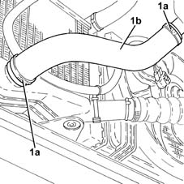

1048B20 air delivery sleeve from heat exchanger to rigid pipe - replace
- Path
- Procedures > 10 ENGINE > 1048 ENGINE AIR SUPPLY CIRCUIT > 1048B pressure air circuit > 1048B20 air delivery sleeve from heat exchanger to rigid pipe - replace
- Kind
- repair procedure (removal / refitting; the operation number is the code)
- Applies to
- engines: 1.3 JTD; all production periods
- Interactive page
- https://sloeber94.github.io/elrnDB-lYpsln/en/#/2429029
Applies to: engines: 1.3 JTD; all production periods
 Removing
Removing
 Refitting
RefittingPosition the vehicle on the ramp.
Proceed with removal .
1. Loosen the bands (1a) and remove the air supply hose between the heat exchanger and the rigid pipe (1b).

Applies to: engines: 1.3 JTD; all production periods
Refitting
RemovingPlace the air supply hose between the heat exchanger and the rigid pipe back in its housing and fasten it using the bands.
Proceed with refitting .
Remove the car from the ramps.